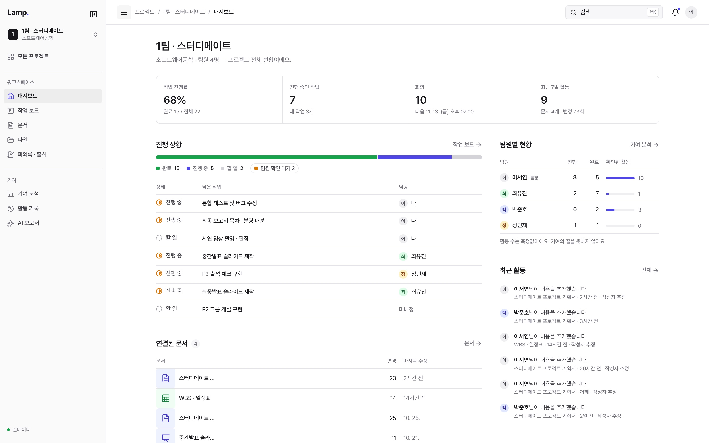
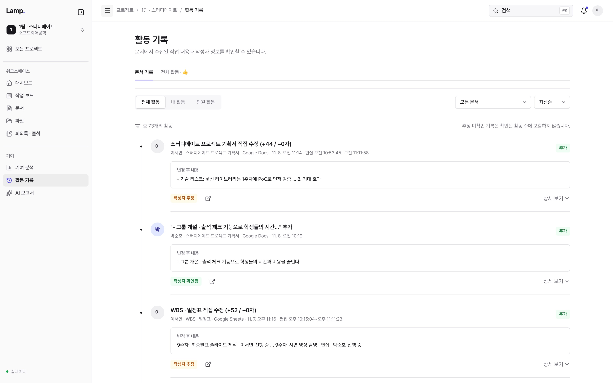
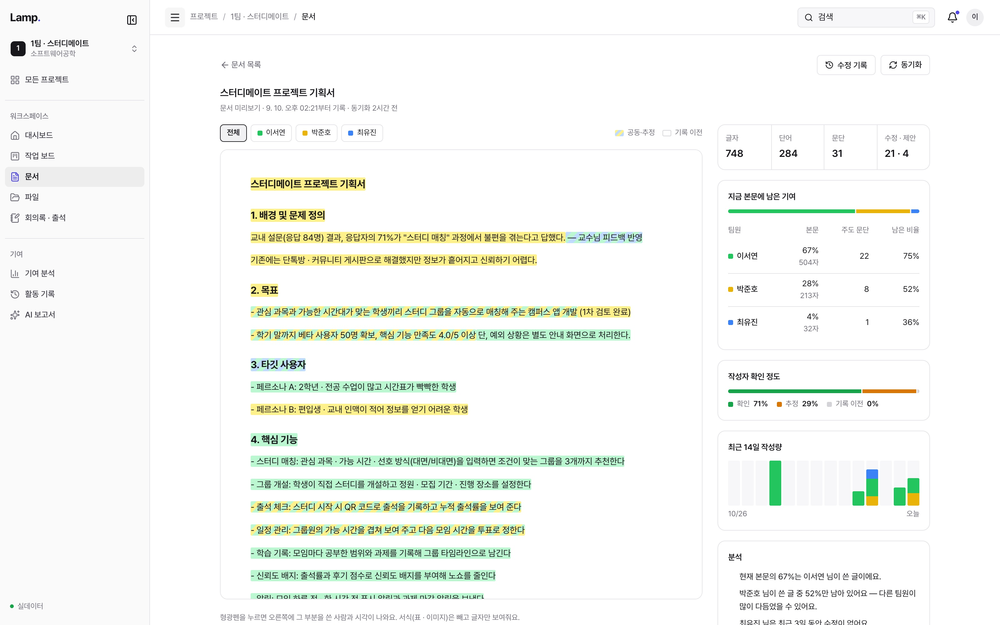
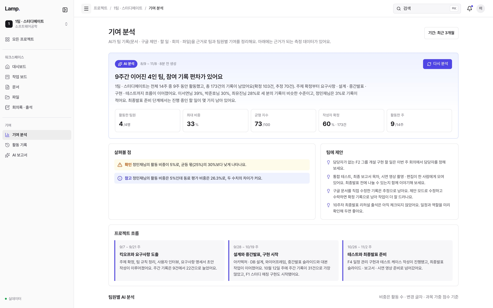
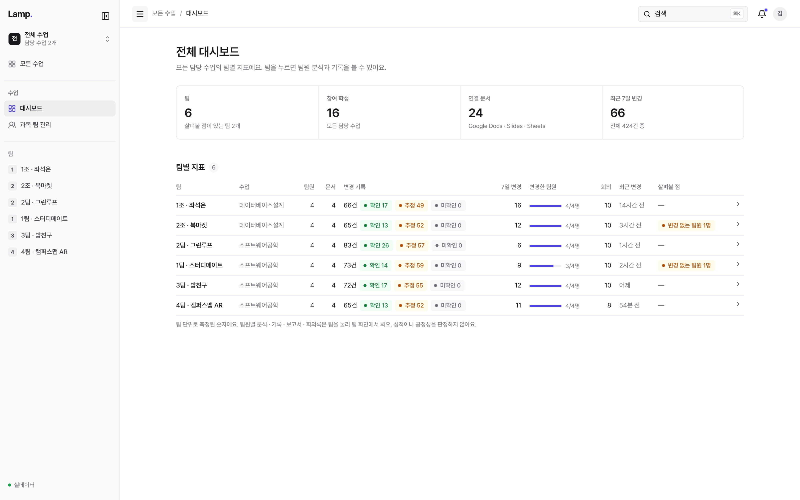
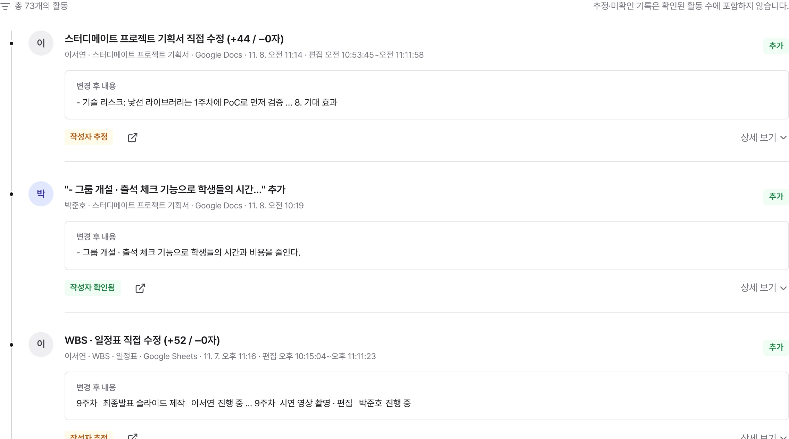
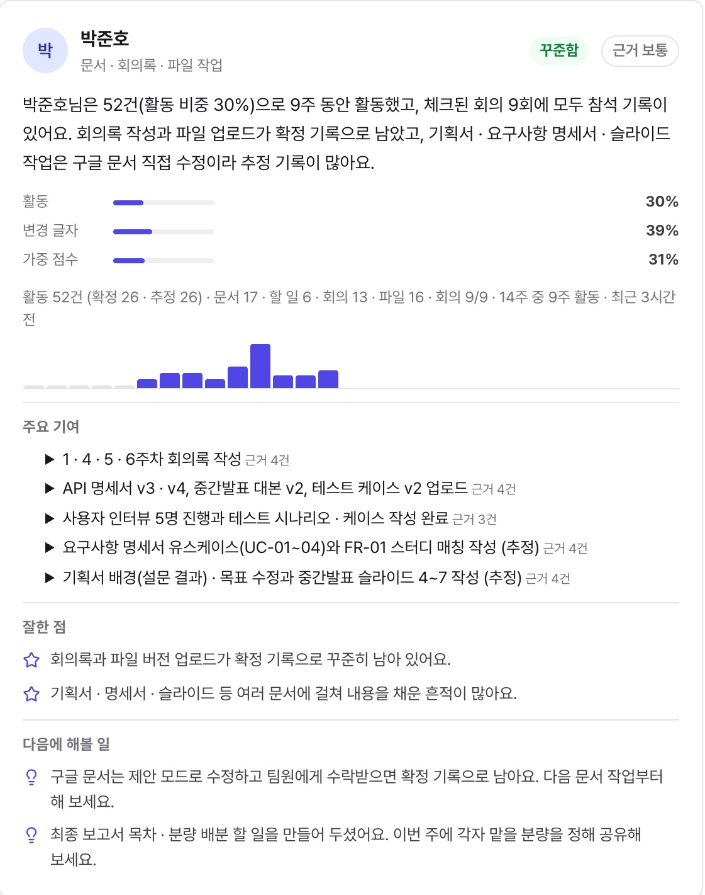

Infosys Hackathon · Summit · 등잔 밑이 어둡다
팀플이 끝났습니다.
조원 평가는
어떻게 이루어질까요?
조민성 · 인시환 · 최완규
01 문제
동료평가지는
모두에게
5점을 줍니다.
결과물은 하나, 개인 점수의 근거는
종이 한 장뿐입니다.
팀원 상호평가서
| 팀원 | 참여도 | 기여도 | 협조성 |
|---|---|---|---|
| 팀원 A | 5 | 5 | 5 |
| 팀원 B | 5 | 5 | 5 |
| 팀원 C | 5 | 5 | 5 |
| 팀원 D | 5 | 5 | 5 |
기타 의견“다들 열심히 했습니다.”
이 중 누가
실제로 일했을까요?
01 문제 · 공개 설문
37.4%
대학생이 꼽은 꼴불견 1위,
조별과제 무임승차
2013년 조사에서도 여전히 1위
알바몬 대학생 940명 설문 (2007, 파이낸셜뉴스 보도)
알바몬 대학생 1,175명 설문 (노컷뉴스 2013.6.18 보도, 19.9%)
01 문제 · 구조적 한계
평가지는 기억을 묻습니다. 기록이 아니라.
— 친분·압박 편향, 동일 점수 담합
— 소규모 팀 산술평균의 통계적 한계
— 도중의 반복 평가가 태만을 줄인다
증거는 이미 있었습니다.
기록되지 않았을 뿐.
팀플을 하는 동안 문서 수정·회의 출석·할 일 완료 같은 기여는 매일 일어납니다. 문제는 이 과정이 평가에 쓸 수 있는 형태로 모이지 않는다는 점입니다.
Topic 오늘의 주제
등잔 밑이
어둡다.
등잔은 방을 밝히지만, 바로 밑은 그림자에 가려 어둡습니다.
가까이 있는 것일수록 오히려 보이지 않습니다.
Lamp.는 바로 그 밑을 비춥니다.
Lamp.
기여를 새로 입력하지 않습니다.
이미 한 일을 증거로 바꿉니다.

02 제품 · 실제 화면
한 팀의
한 학기.
- 01팀 · 문서 연결한양대 구글 로그인 한 번으로 드라이브 연동
- 02평소처럼 작업모든 수정이 기록 — 작성자 확인 / 추정 표시
- 03기여 확인본문에 남은 글의 작성자 비중
- 04AI 분석기록을 근거로 팀 · 팀원별 분석
- 05교수 확인모든 팀을 한 표로, 읽기 전용




Technology 01 · 작성자 추적
동시에 쓰면, 작성자가 사라집니다.
2. 문제 정의팀원 A — 기존 동료평가는 주관적이며
학기 말 한 번의 기억에 의존한다팀원 B. 따라서 본 팀은
활동 기록을 근거로 한 평가 방식을팀원 C 제안한다.
버전 기록
어느 문장이 누구의 것인지
알 수 없습니다.
구글 문서는 여러 명이 동시에 편집하면 짧은 시간의 변경을 하나의 버전으로 합칩니다. 버전 기록엔 편집자 목록만 남아, 어떤 문장을 누가 썼는지 알 수 없습니다.
Technology 01 · Google Docs 제안 모드
제안 하나하나에 작성자를 붙입니다.
2. 문제 정의 — 기존 동료평가는 주관적이며 팀원 A학기 말 한 번의 기억에 의존한다.작성자 확정 · 팀원 A
3. 해결 방안 — 팀원 B문서·회의·할 일 기록을 근거로 삼는다.작성자 확정 · 팀원 B
- 1동시에 입력두 팀원이 같은 순간 제안 모드로 작성
- 2입력 끝 감지워커가 짧은 주기로 제안을 읽고, 내용이 멈추면 완료로 판단
- 3작성자 식별docx 변경 추적의 작성자를 제안과 짝지음
- 4기록 후 자동 수락문서는 깨끗하게, Lamp.엔 작성자별 흔적
- 5기여 반영추정이 아닌 확정 기여로 집계
documents.get · SUGGESTIONS_INLINE
docx 내보내기 → w:ins / w:del 작성자
batchUpdate · acceptSuggestion
팀원이 구글 문서의 ‘제안 모드’로 쓰면 제안마다 작성자가 붙습니다. Lamp.가 이를 기록한 뒤 자동으로 수락하므로, 문서는 평소처럼 깔끔하고 기여는 문장 단위로 확정됩니다.
Technology 01 · 신뢰도 등급
모든 기록에 확실한 정도를 붙입니다.

추정 · 미확인 기록은 확인된 활동 수에 넣지 않습니다.
제안 모드를 쓰지 않은 직접 수정도 버리지 않고, 작성자가 얼마나 확실한지 등급을 붙여 보여줍니다. 교수는 확정된 근거와 추정을 구분해서 판단할 수 있습니다.
Technology 02 · 근거 기반 기여도
10배 더 써도, 점수는 1.7배.
계산 예시 · 실제 산식: compute_points, get_team_contributions (Postgres 함수)
활동을 점수로 바꾼 뒤 로그를 씌워, 같은 활동을 많이 할수록 증가폭이 줄어듭니다 — 글자 수 부풀리기가 통하지 않습니다.
Technology 03 · 근거 기반 AI 리포트
AI는 판단하지 않습니다.
근거를 정리합니다.
확정 / 추정 구분 포함
코드로 먼저 계산
JSON 스키마로 형식 강제
규칙 결과로 되돌림
교수용: 면담 질문
AI가 점수를 정하지 않습니다. 비중·패턴·경고는 코드(규칙 엔진)가 계산하고, AI는 그 결과를 문장으로 정리합니다. 입력에 없는 근거가 섞이면 AI 문장을 버리고 규칙 결과를 그대로 보여줍니다.
Technology 03 · 실제 출력
AI가 쓴
팀원 리포트.
데모 계정에서 실제 생성된 결과 · 입력은 데모용 시드 데이터

Engineering · 시스템 구조
권한은 DB가, 점수는 서버가 정합니다.
Engineering · 시스템 아키텍처 상세
화면·API는 Vercel, 데이터·권한은 Supabase, 문서·AI는 외부 API.
Impact · 도입
옮길 필요 없이, 연결만 합니다.
교수 없이도 — 독립 팀
동아리 · 공모전 · 스터디. 교수 · 성적 언급 없는 팀원용 리포트
학과 파일럿 → LMS 연동
캡스톤 과목 한 학기 운영 · 성적 내보내기 · GitHub 연동
판단은 교수가.
근거는 Lamp.가.
Lamp. · 조민성 · 인시환 · 최완규 · 감사합니다
부록 A · 인용 자료
| 자료 | 내용 |
|---|---|
| 알바몬 대학생 설문 (2007, n=940) | 조별과제 무임승차가 캠퍼스 꼴불견 1위, 37.4% — 파이낸셜뉴스 2007.11.14 |
| 알바몬 대학생 설문 (n=1,175) | “묻어가는 조원” 꼴불견 1위, 19.9% — 노컷뉴스 2013.6.18 |
| Aggarwal & O'Brien (2008) | Social loafing on group projects. Journal of Marketing Education 30(3), 255–264 |
| 장현재 (2024) | 팀원 기여도에 대한 동료평가의 신뢰성과 성적 반영 방법. 공학교육연구 27(1), 63–70 |
| Griffith University 동료평가 가이드 | 친분 · 동료 압박 편향, 동일 점수 담합 — FSTE 2019 발표자료 |
부록 B · 구현 상태
| 기능 | 상태 · 근거 |
|---|---|
| 제안 모드 작성자 추적 · 자동 수락 | 구현 — suggestionSync.ts · suggestion-worker.mjs (워커는 별도 프로세스로 실행 필요) |
| 스냅샷 diff + Drive Activity 시간 비율 배분 | 구현 — attribute.ts, 단위 테스트 11개 |
| 기여도 산식 (ln 수확체감 · 가중치 · 인정 ×1.2) | 구현 — Postgres 함수 compute_points · get_team_contributions |
| 규칙 엔진 + LLM 리포트 · 근거 검사 · 실패 시 규칙 리포트 | 구현 — src/lib/analysis, /api/ai-report |
| RLS · 토큰 AES-256-GCM · drive.file | 구현 — migrations/*_rls.sql · google/crypto.ts |
| 동료평가 입력 · 불일치 표시 | 부분 — DB 산식과 보고서 표시는 있음, 학생 입력 화면은 확인 필요 |
| 학과 파일럿 · LMS 연동 · GitHub 연동 | 계획 |